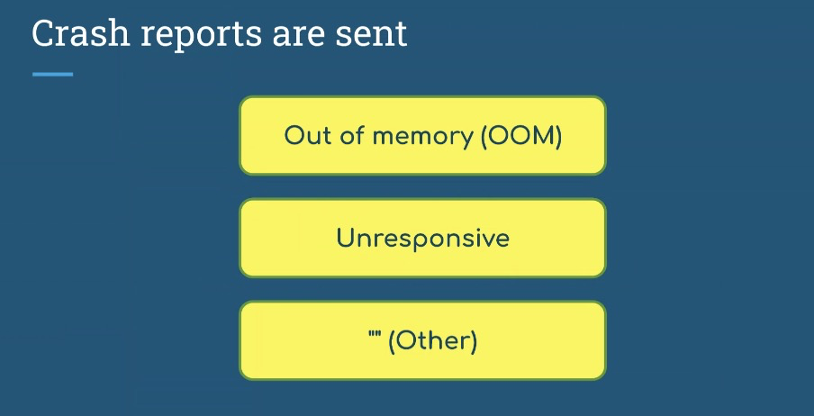
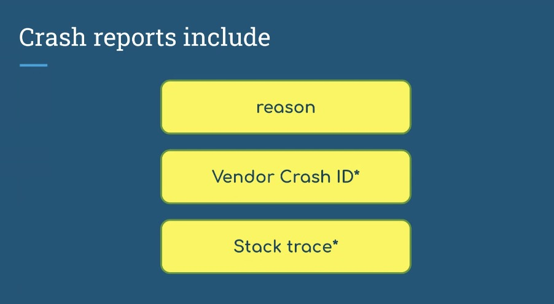
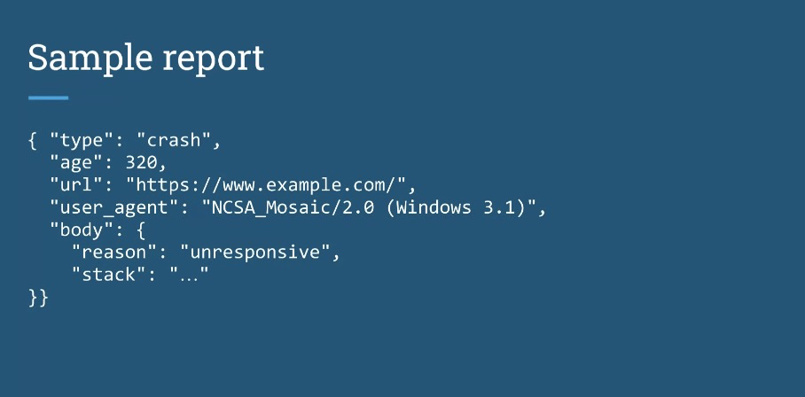
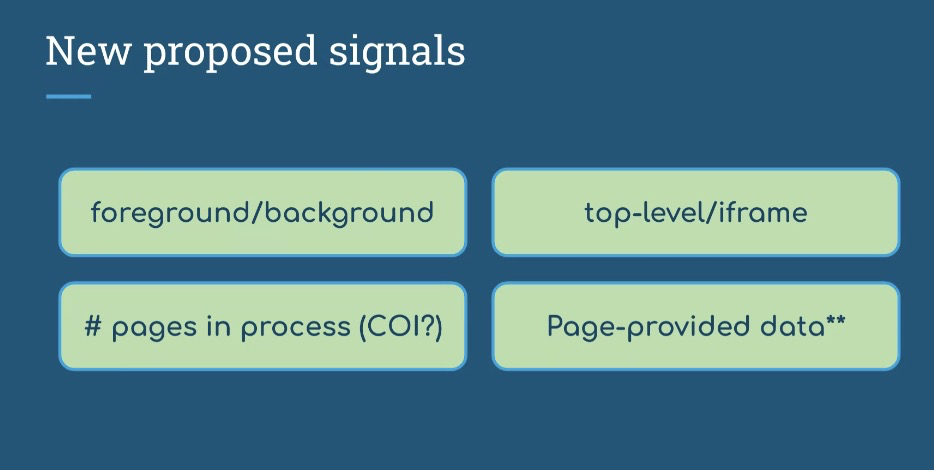
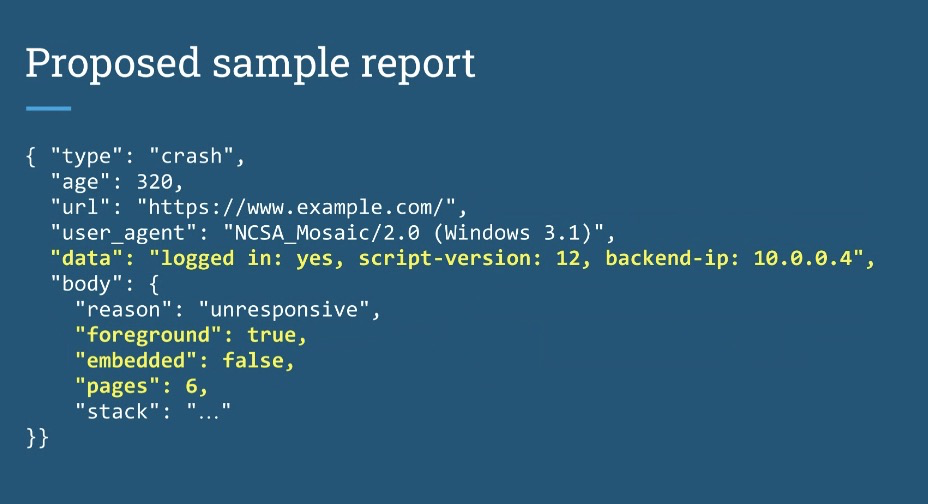

Participants
- Nic Jansma, Yoav Weiss, Guohui Deng, Issac Gerges, Jose Dapena Paz, Jacob Groß, Dan Shappir, Noam Helfman, Giacomo Zecchini, Amiya Gupta, Carine Bournez, Philip Tellis, Jase Williams, Michal Mocny, Bas Schouten, Ben Michel, Gal Weizman, Lucas Pardue, Ian Clelland, Nishitha Burman, Tariq Rafique, Michelle Vu, Patrick Meenan, Joone Hur, Victor Huang
Admin
- Next call - December 5th at 11am EST / 8am PST
- Social media
- Have a twitter account
- Should we try to revive it and/or go to bluesky?
- Michal: existing channels would do a better job of informing folks
- … But social media could help bring more folks in
- Nic: Could do both
- … Last year we tried to summarize discussions, but fell off the wagon
- … But it’d be useful to surface the stuff we’re working on
- … So we can give it a try. Admin stuff may not be useful, but when publishing the minutes, we can post them on bluesky on top of GH
- Michal: I see folks discussing TC39 notes, etc which gets more feedback and involvement
- Nic: We’ll use webperfwg.org for bluesky
Minutes
Element Timing adoption
- Bas: Looking into advancing Mozilla’s position on ElementTiming, and looking forward to ContainerTiming discussions
- … Primary concerns we voiced and in issue is there’s not a “venue”
- … But I think we need it to be adopted into a charter to move it out of WICG
- … Standards people at Mozilla would like that to happen for it to move forward with adoption
- Yoav: If as a WG we need to adopt ElementTiming, I’d love to see it happen
- … Chairs would send a Call for Consensus (CfC) to make sure this is documented
- … If anyone has objections, they have a chance to voice them
- … Once that passes, we can adopt the work
- … We should be able to effectively include it in our charter, without it being an explicit deliverable
- … We could also amend the charter, which requires a procedure
- … Happy to push that through, I don’t think we need to wait on WG adoption for all that procedure happens
- Bas: Internal ask to make sure status is understood
- Carine: I don’t think we need a change to the charter
- … We need to make sure contributors in WICG are in Working Group so we don’t have IPR issues
- Bas: If I look at the spec, only way to know is by looking at which WG is responsible is by looking at charters
- … Else how do I know WICG is part of a specific WG?
- Yoav: Easy to distinguish between Community Group and Working Group specs
- … Github repo is under W3C org not under a WebPerf org
- Carine: You have a JSON file in repository, if it belongs to a Working Group there’s a w3c.json file that, which also has staff info
- Yoav: Makes sense to file an issue so info is more visible
- Ian: Part of metadata of spec itself, Bikeshed and Respec need it
- Carine: w3c.json is mandatory in repositories
- Ian: I have seen some specs as part of boiler plate it’s part of a specific working group
- Yoav: Makes sense for it to be part of the theme
- … Going back to Element Timing, chairs can send a CfC
- … 2 weeks enough?
- Carine: I would allow a few more days with next week Thanksgiving
- Yoav: So 3 weeks. Assuming that passes, we can move repo to w3c.org
- … Only amendment would be to add it as a deliverable
- Jase: What do you think next steps for ContainerTiming / ElementTiming extra work in the process
- Yoav: From my perspective this should be in the same repo, adopted under the same thing
- Michal: Originally filed as an issue on ElementTiming to improve and fix ET
- … There are some clear obvious ways this should be in ElementTiming, but all of the work and people are part of one project
- Bas: It would be good if we’re already positive to ElementTiming before moving on to ContainerTiming
- Yoav: For CfC, we’ll send it for ElementTiming with vision of integrating ContainerTiming afterwards as an improvement
Crash Reporting Updates - Ian
- Ian: Crash Reporting is a WICG spec
- … Used to be embedded in Reporting API spec
- … Split out a couple years ago
- … Sends out of band reports using Reporting API
- … 3 conditions

height: 462.00px; margin-left: 0.00px; margin-top: 0.00px; transform: rotate(0.00rad) translateZ(0px); -webkit-transform: rotate(0.00rad) translateZ(0px);" title="">- … Out of memory
- … Responsive
- … Catch-all for other reasons a process crashed
- … Reports are simple, contain:

height: 496.00px; margin-left: 0.00px; margin-top: 0.00px; transform: rotate(0.00rad) translateZ(0px); -webkit-transform: rotate(0.00rad) translateZ(0px);" title="">- … Allows bulks crash reporting
- … Option of stack trace, recently added, Origin Trial (OT) in Chrome

height: 448.00px; margin-left: 0.00px; margin-top: 0.00px; transform: rotate(0.00rad) translateZ(0px); -webkit-transform: rotate(0.00rad) translateZ(0px);" title="">- … A number of people making use of this in aggregate
- … Take some action on bulk volume of crashes
- … Some interest in a bit more data to make these more actionable
- … Thinking of acting some additional signals

height: 470.00px; margin-left: 0.00px; margin-top: 0.00px; transform: rotate(0.00rad) translateZ(0px); -webkit-transform: rotate(0.00rad) translateZ(0px);" title="">- … Foreground/background boolean, determine user impact
- … top-level iframe may not be available from URL, depending on how you’re embedded
- … iframe crash could be different UX than the entire tab crashing and taking everything down with it
- … Might be interested in how many other pages were in this process
- … When process crashes, it takes down everything with it
- … Depending on browsers’ model of what page goes into what process, but it might require cross-origin isolation
- … Useful for site authors to annotate reports with additional data
- … Serializable or JSON data
- … Roughly equivalent to sendBeacon() but only triggered by crashes
- … Heard request for this a few times
- … Maybe we want to add this to Reporting API as a whole
- … Equivalent to sendBeacon() but only sent in certain circumstances

height: 504.00px; margin-left: 0.00px; margin-top: 0.00px; transform: rotate(0.00rad) translateZ(0px); -webkit-transform: rotate(0.00rad) translateZ(0px);" title="">- … metadata about state of the document at the crash
- … foreground/embedded/pages added
- … Get opinion of people in WG on whether these are fair to include, useful signals
- height: 390.00px; margin-left: 0.00px; margin-top: 0.00px; transform: rotate(0.00rad) translateZ(0px); -webkit-transform: rotate(0.00rad) translateZ(0px);" title="">
- … WICG spec, can we adopt it here?
- … If rough approval, CfC and go through the process there
- Bas: Sentiments heard inside Mozilla is that WebPerf Working Group easily becomes a venue for standards that aren’t obviously related to WebPerf.
- … We’re positive for Crash Reporting API
- … Why would this Working Group be the right one?
- Ian: It falls under Reporting API
- … General idea that it’s telemetry, data from field like sendBeacon
- Yoav: Reporting on the one hand, memory reporting
- Nic: And our charter mentions “measurement… of application failures and other user experiences”
- Dan: Not clear to me what the expected action to be taken with this information, informs Bas’ point
- … What do you expect from this beacon?
- Ian: A single beacon isn’t very actionable
- … For privacy, security, we don’t give out a lot of information on crash
- … In aggregate, an increase in reports to a change in code, you can pinpoint a regression
- … What caused app to use more memory, render crashes
- Dan: Then what? Change site to revert behavior?
- Ian: Depends on type of report, for unresponsive or OOM, it’s usually something in your site that you changed
- … Empty-reason, it was a renderer crash that was happening
- … Internal teams at Google could use that to look into things
- Yoav: Similarly, if you start shipping a new feature, you see a rise in crashes, you can revert that and report that
- Bas: One additional thing with metadata is A/B testing
- Dan: Session ID
- … Problem is if this isn’t happening in all sessions, only particular sessions, without Session ID, might be impossible to determine what caused it
- Ian: Right now you’d have to embed that in the URL to be useful
- Dan: Cookies could be helpful
- Ian: With Reporting API we do send cookies to same-origin, but not for 3P collectors
- Noam: I can share a case how we used it in Microsoft Office
- … We integrate additional metadata, query string to have Session ID
- … Aggregate, we can look at the Session and correlate to specific change to A/B testing infrastructure
- … Not always useful as it requires offline data analysis, joining state of session
- … But can correlate with potential users with crashes, we have a dump we can analyze it
- … i.e. where someone inserted a bug, while loop adding to an array, and it occasionally crashed.
- … We were able to use Reporting API to detect the case, identify the user, analyze crash dump, find root cause, and fix it
- … Whether the additional metadata would help? Would simplify the investigation
- … Without trying to offline/aggregate it
- … Make it simpler but not a huge must
- … Regarding Bas’ question of whether it’s part of WebPerf WG, more philosophical
- … A line that goes between Perf aspects and Reliability. At some point Perf metrics becomes a Reliability problem.
- … Perf of 30s is no longer performance, it’s reliability
- … Part of the same domain of problems
- Yoav: This is covered in our charter
- Michal: There was a recent anecdote internally, a particular site migrated, and measured loading performance for users was consistent and improved, but a significant portion of population were never reaching site at all
- … Significantly more abandonments and you have no measures there
- … Not clear to me Reporting API would’ve cough all of the use cases
- … Perf and reliability go hand in hand
- … In addition to the charter it’s important for performance as well
- Carine: I think we can draw the line whether it’s in the charter or not
- … Browser performance is out of scope
- … If it’s something mostly to record browser failures, we’d need to propose a charter change in that case
- … If it’s about website performance and we can prove that, it would be fine
- Yoav: Right now this particular spec intermingles both, we have 2 reasons are application failures, the third is likely to be browser failure
- … We have other APIs that can expose browser slowness (not their purpose but reflected by them)
- … Browser performance can impact all measurements
- … Similar for memory measurements, if browser did something silly and it’s allocating more data, it will be reflected in memory measurement API
- … Not sure we can draw a clear line between those things
- … Interesting question to raise to the group, I’m not sure the line is that clear
- Nic: RE Ian’s question on metadata, as a RUM vendor we already slice by different dimensions
- … Having these reports align with user-defined dimensions would be very useful and help customers segment reasoning behind these reports
- … Optional metadata could be very useful
- Yoav: Commenting on issues could be a good next step
- … Working group adoption?
- … Would make sense to watch discussion and see level of consensus
- … Regarding Crash Reporting in general, and these additions specifically
- … If we see broad support, bring as a separate discussion
- Nic: Revisit early 2025?
WPT label
- https://github.com/web-platform-tests/wpt-metadata/pull/6947/files
- Yoav: Dave Hunt did the work but couldn’t make it here
- … Adding a label to WPTs that will be reflected in wpt.fyi
- … Allow people to filter based on WebPerf
- … So if someone wants to see all WPTs related to Web Performance things, this is the list of directories
- … A lot of specs that are still in the Working Group, and others that were in but were since moved into HTML
- … Some incubations that are not (yet) in the Working Group possibly?
- … It would be good for folks to take a look and see all the repos covered by the Working Group are actually covered here
- … See if there’s anything else that should have this label?
- … Otherwise chime in on the PR
- Michal: What purpose does the label serve? UI?
- Yoav: Reflected in the wpt.fyi
- … One example, existing label for accessibility
- … So if one adds a filter “label:accessibility” they get tests under folders
- … Under HTML similarly there are a few tests related to the DOM
- … Enables one to filter, if they want to see
- … For Web Performance how are we doing on WPT in terms of interoperability
- … Which browsers are passing which tests?
- … View of wpt.fyi that is WebPerf specific
- Michal: Any bots use these labels?
- Yoav: Not aware of any, but we could use this
- … Opinions, chime in on the PR
- Michal: I think change is great, no concerns
- … Now that we’re talking about WPT
- … At perf.now() I heard some feedback from folks that had raised nuances of APIs
- … This is one of the easiest contributions that someone could make
- … A lot of room for improving WPTs
- … Gives a nice concrete way
- … Callout if anyone interested, room to contribute
- Yoav: In bug reports, if I’m tackling an issue and there’s already a WPT that I have to make green, that’s 50% of the work already done